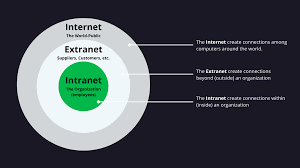

Intranet & Extranet
An intranet is a private network for an organisation. An extranet is a private network shared with external partners.
| Type | Access | Purpose |
|---|---|---|
| Intranet | Internal only | Employee communication |
| Extranet | Trusted partners | Collaboration |
| Internet | Public | Global access |
Key idea: Both use Internet technology but limit who can access them.
